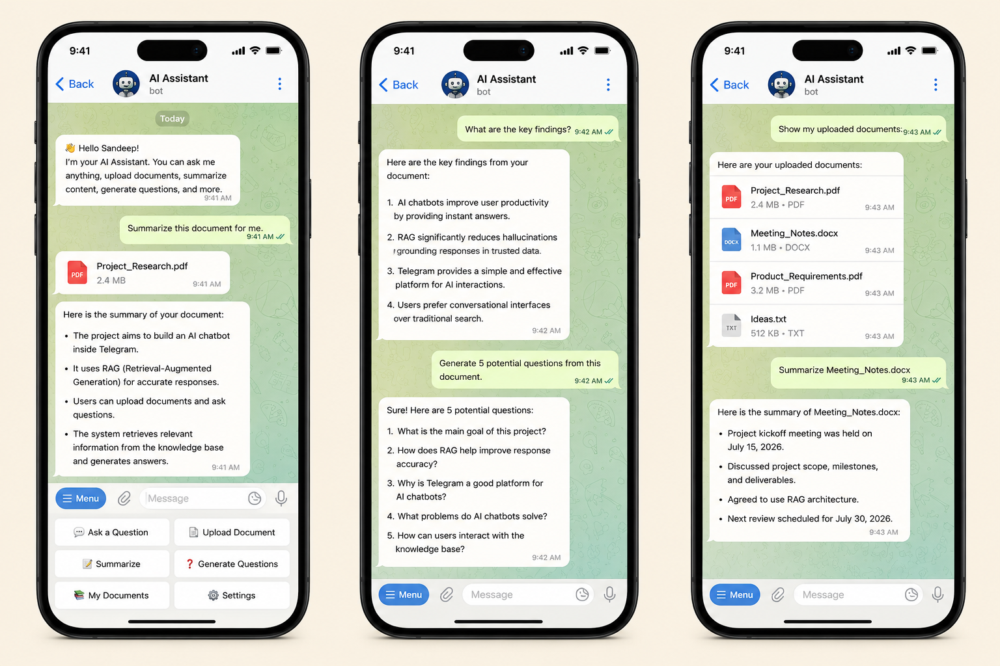

We live in a world overflowing with data, yet we constantly struggle to find the exact information we need. My goal with this project was simple: to eliminate the friction between a user and their personal knowledge. I didn't want to build yet another standalone app. Instead, my intention was to bring the power of advanced document understanding and conversational AI directly into a space where people already spend their time.
THE PROBLEM
Our most valuable information is scattered. It lives in downloaded PDFs, endless conversation threads, bookmarked websites, and fragmented personal notes.
When a user needs a specific answer quickly, they are forced to dig through this digital clutter.
Currently, users face two frustrating extremes: rigid, rule-based chatbots limited to predefined
responses, and general-purpose AI models that lack access to a user's private knowledge base.
The Gap: There was a massive missing link between natural conversational AI and deeply
personalized information retrieval. I wanted to build a bridge across that gap.

THE SOLUTION
AI assistance, where you already are.
By utilizing a familiar chat interface, the learning curve is reduced to zero. Users can seamlessly interact with the agent as if they were texting a knowledgeable colleague. They can forward long documents, ask complex questions about specific uploaded content, request summaries, and retrieve precise information from their connected knowledge base—all through natural language.
THE USER JOURNEY
Making complex AI feel like a simple text conversation.
Intuitive Input
The user texts a question or uploads a document directly into the Telegram chat. There are no forms to fill out or complex menus to navigate.
Intent Processing
The system acts as an intelligent router, analyzing natural language to understand the user's true intent and determining instantly if it needs to hunt for external knowledge.
Contextual Retrieval
Using advanced semantic search, it dives into the connected knowledge base. It looks for the meaning behind the user's question to pull the most relevant information.
Intelligent Response
The AI synthesizes the retrieved information, generating a highly contextual, accurate, and conversational response, delivering it back in seconds.
KNOWLEDGE RETRIEVAL
A context-first AI architecture.
To make this work without the AI "hallucinating" or guessing, I implemented a
Retrieval-Augmented Generation (RAG) pipeline.
Instead of relying solely on the LLM’s pre-trained knowledge, this architecture forces the
system to retrieve highly relevant, user-specific context first. By prioritizing retrieved
context over raw AI generation, the assistant remains grounded, factual, and strictly tethered
to the user's actual data.
SYSTEM COMPONENTS
Designed around intelligent workflows.
The Telegram Bot
The primary, frictionless user interface. It handles file parsing, message formatting, and user interactions natively.
AI Orchestration
The central logic engine. It manages the conversation history, maintains short-term memory, and intelligently routes tasks between workflows.
Knowledge Retrieval
Powered by a vector database, this component ingests, chunks, and semantically searches through stored documents and structured knowledge.
Response Generation
The Large Language Model that takes the retrieved data and translates it into a clear, conversational, and digestible answer tailored to the user.
What this project taught me
The best AI experience is rarely a new application.
Building this assistant natively inside Telegram radically changed my perspective on product
design. It reinforced a vital lesson: you must meet users where they already are. By removing
the friction of downloading software, creating new logins, or learning a new UI, the user's
focus shifts entirely from navigating a tool to simply getting answers.
Context is what transforms a chatbot into a true assistant.
The heaviest architectural lift wasn't getting the AI to generate a response—that part is easy.
The real challenge, and the true value of this project, was teaching the system when it lacked
knowledge, how to find the right context, and restricting it to use only that truth to produce a
genuinely useful answer.